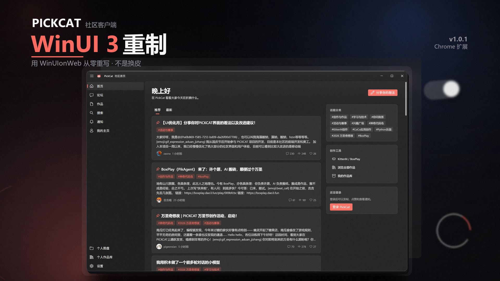
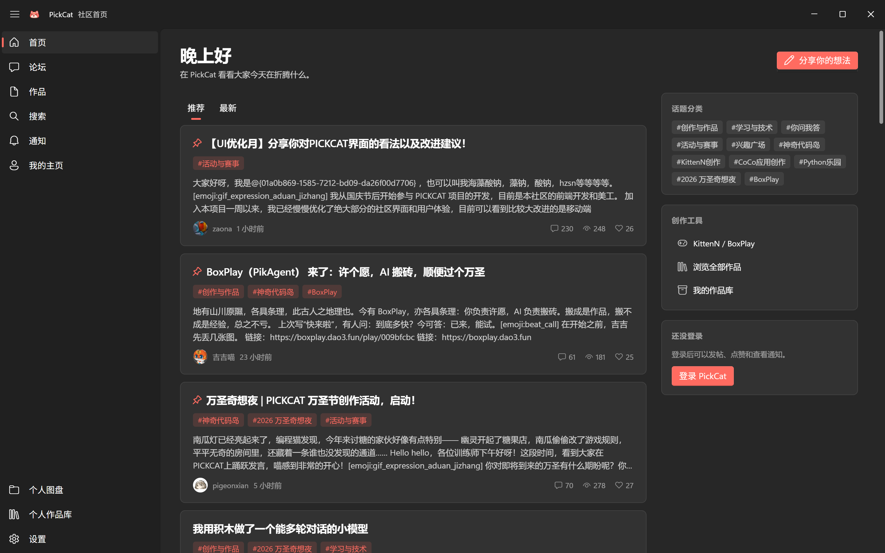
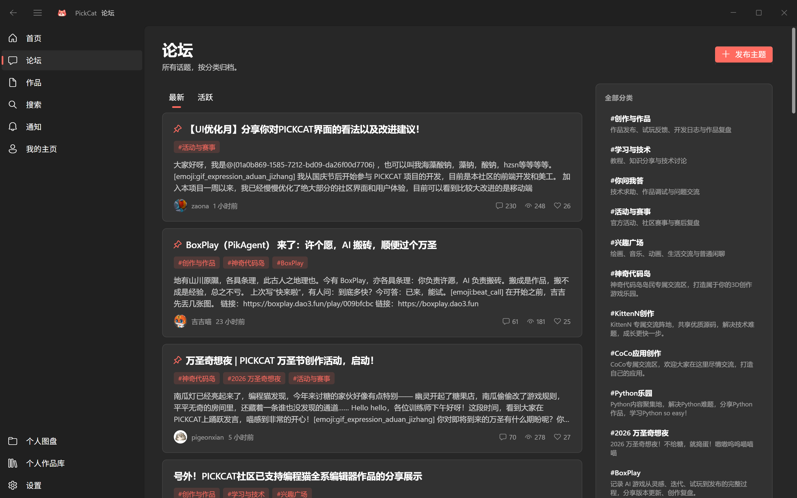
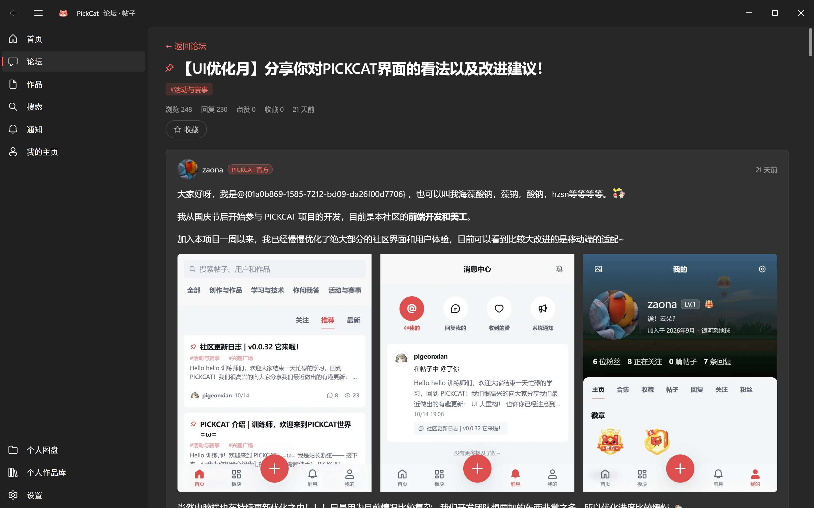
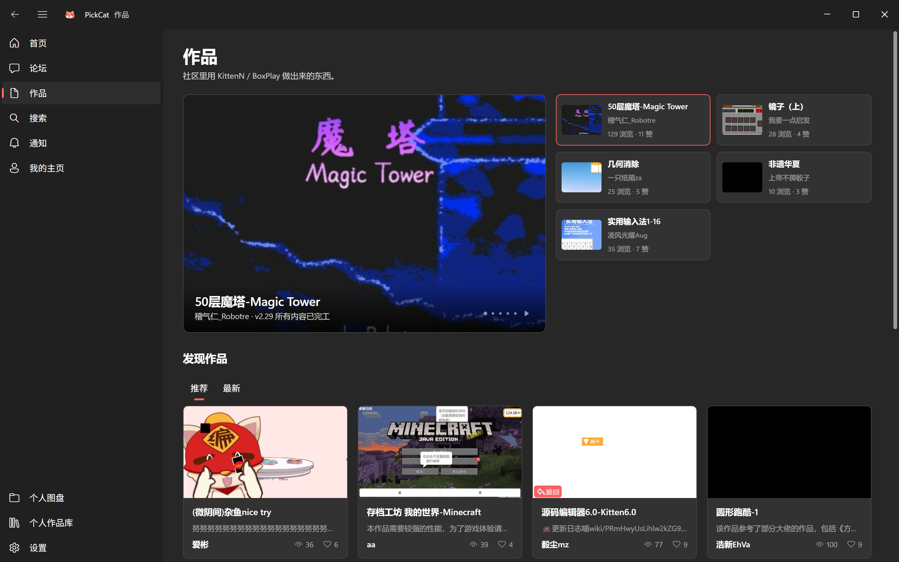
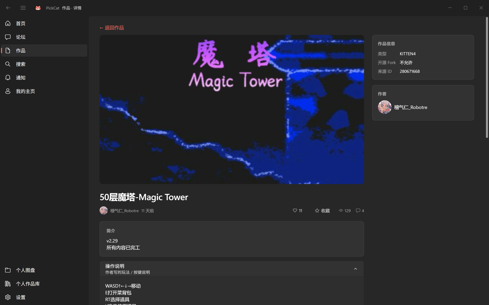
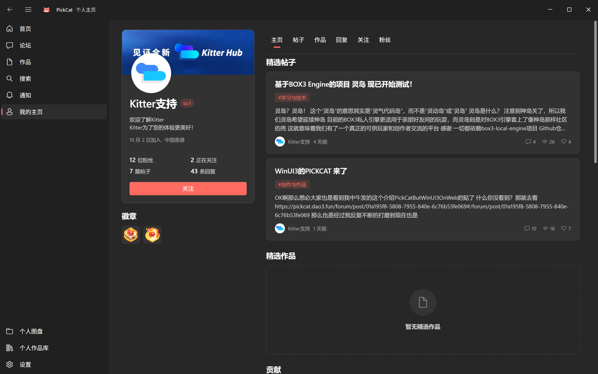
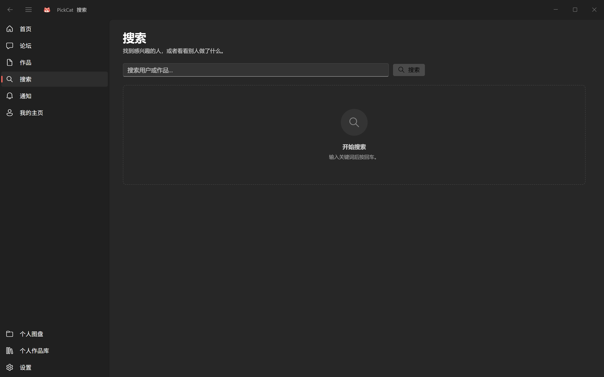
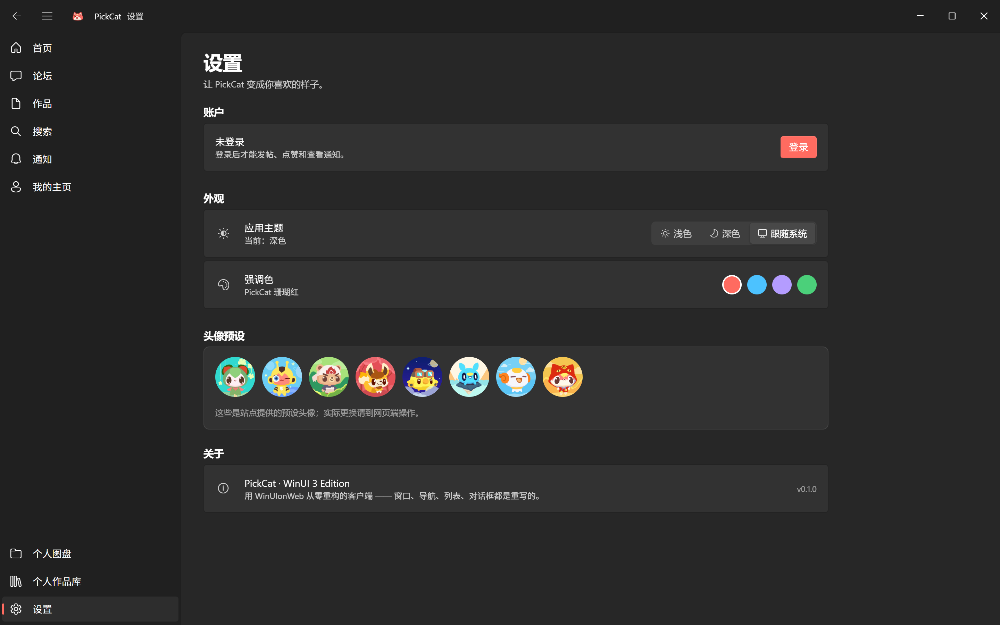

真控件，不是仿制
窗口标题栏、导航栏、右键菜单、对话框、消息提示都是独立实现的控件，有完整的焦点、悬停和按压状态。
非官方 · 开源 · GPL-3.0
原站的界面被整个丢掉，按系统应用的逻辑重新做了一遍。窗口、导航、右键菜单、 Markdown 编辑器、消息提示 —— 都是真的控件，不是套一层皮。

不是换一层 CSS，而是让控件承担交互。
窗口标题栏、导航栏、右键菜单、对话框、消息提示都是独立实现的控件，有完整的焦点、悬停和按压状态。
进入下一层从右滑入，返回时反向退出，同级切换淡入；列表逐条上浮，卡片按压轻微缩回。
卡片操作、复制选中文字、打开选中文字里的链接、复制链接地址、回到顶部、刷新 —— 空白处也有菜单。
登录表单完整保留原站，滑块验证在官方页面完成。我们不碰密码，也不接管验证码。
四套强调色，标题栏与界面同步切换，深色下不会出现刺眼的白块。
所有请求都发往 pickcat.dao3.fun，本地只保存主题和强调色两项偏好。
当前版本的实际截图，横向滚动查看。








不需要命令行，大约一分钟。
比如 C:\Users\你的用户名\PickCatWinUI3。不要放在「下载」或临时目录 —— 扩展会一直读这些文件。
地址栏输入 chrome://extensions（Edge 用 edge://extensions），打开右上角的开关。
开启开发者模式后左上角会出现三个按钮，点第一个。
选到第 1 步那个文件夹，里面应该能看到 manifest.json。
扩展列表出现「PickCat WinUI 3」即成功，刷新页面就能看到新界面。
C:\Program Filesrules.json: Internal error while parsing rules。
点开看答案。
确认扩展已启用、当前标签页确实是 pickcat.dao3.fun，并刷新页面。都不行就移除扩展重新加载一次。
打开 chrome://extensions，找到 PickCat WinUI 3，点「移除」。原站界面立刻恢复。
浏览不需要。发帖、通知、个人图盘要先登录 —— 点登录会打开官方登录页的新标签页，在那里完成滑块验证。
不会。扩展只在你已登录的页面里调用官方接口，自身不保存、不转发任何数据。
当前版本 SHA-256：见 Release 页面的 SHA256SUMS.txt。Windows 下用
certutil -hashfile PickCat-WinUI3-extension.zip SHA256 比对。
注册、找回密码、圈子、创作、入站考试、审核等页面还没重写，会给出「在原站打开」按钮。
暂不支持，目前只有 Chromium 扩展（Chrome、Edge 等）。